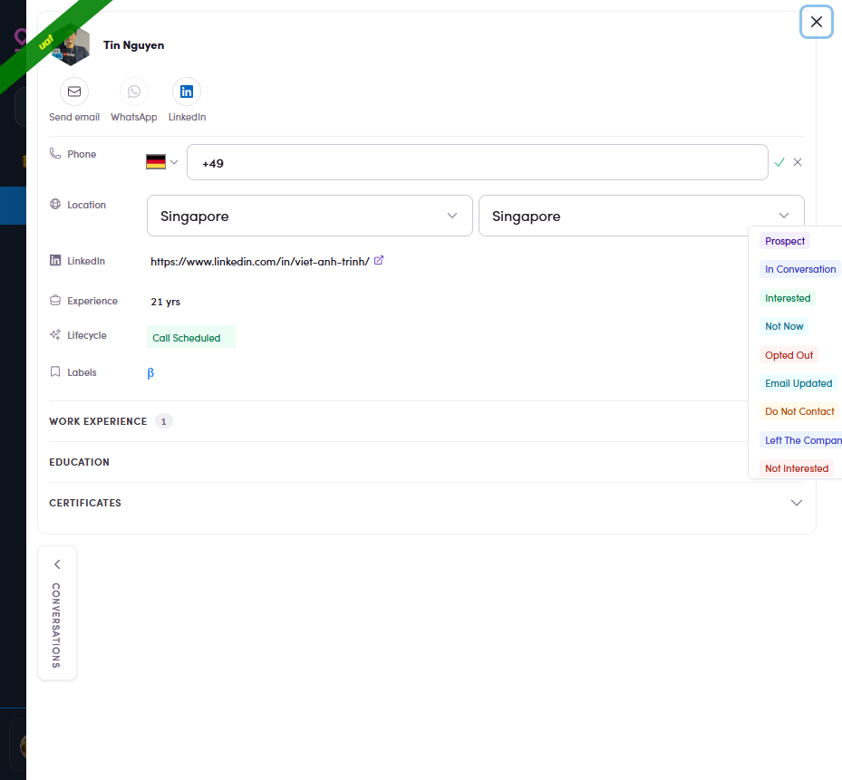
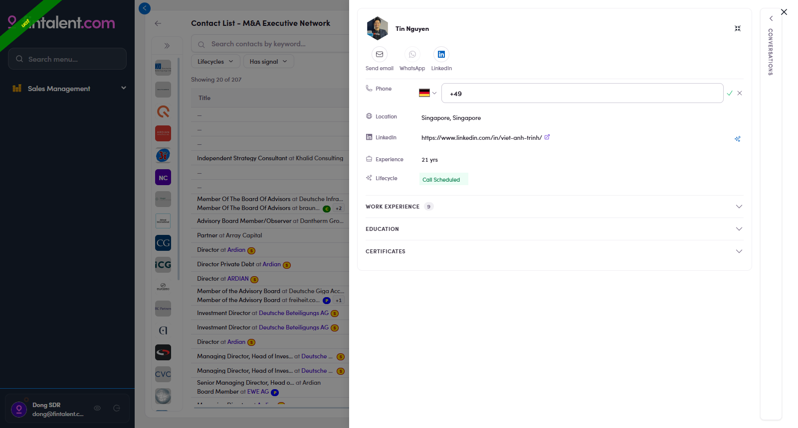
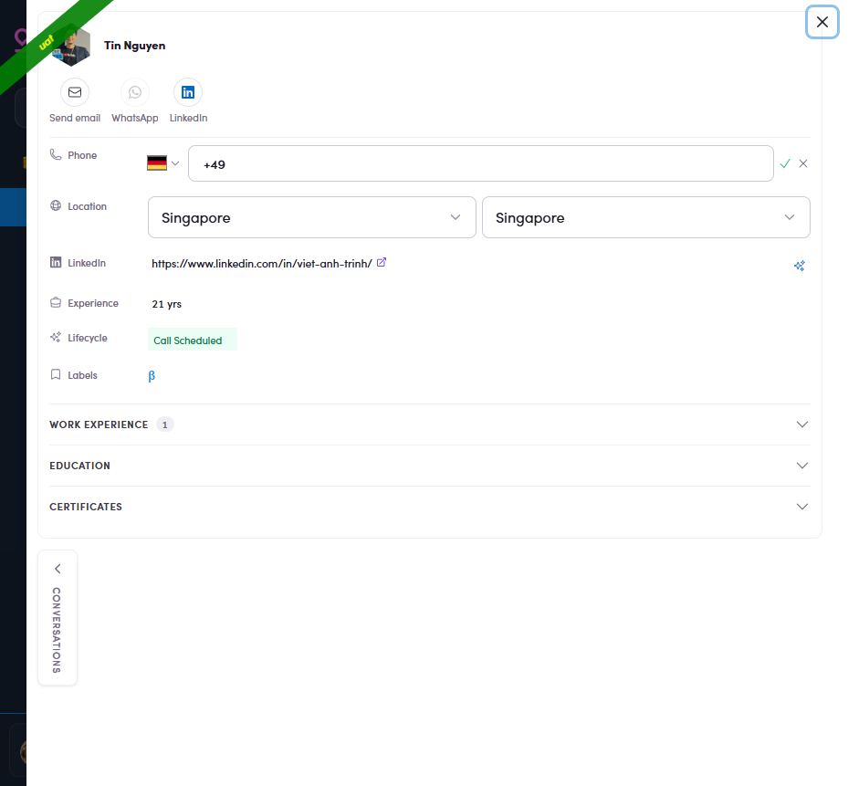

Fintalent OSW - SDR Guideline
Every page is one job you actually do. Each flow keeps the core steps to the shortest happy path (each step with its own screenshot); anything optional or unusual sits in Edge cases at the end (also detailed). Everything is what an SDR login really sees.
Flow 1 · Log in & find your workspace
1.1 · Log in
- Open
admin.fintalent.io. If you're not signed in, the login screen appears — Email · Password · Log In.
1.1 — the login screen: just Email, Password, Log In. - Type the Email and Password the Admin gave you → click Log In.
1.2 · Your workspace
- Log In drops you on Campaigns — your workspace inside Sales Management. Move around with the left menu (8 items); your account card is bottom-left. No Contacts/Companies pages — your lists and Inbox are the entry points.

1.2 — where Log In lands you: the Campaigns page, with the Sales Management menu on the left.
Here's what each menu item is for:
| Menu | What you do here | What you can't |
|---|---|---|
| Segments (Lists) | Open the lists assigned to you and work the members — Flows 2–7. | Can't create a list, assign, or add/remove members — Ops owns that. |
| Inbox | Read replies and reply in-thread — Flow 5. | It's a reply queue — nothing to "create". |
| Meetings | — | — |
| Message Templates | Full create / edit / delete — use & build in Flow 4.x.1. | — |
| Snippets | Full create / edit / delete — use & build in Flow 4.x.2. | — |
| Documents | Full create / edit / delete — the 🗂 file library — Flow 4.x.3. | — |
| Campaigns | View / build multi-step campaigns — Flow 8. | Can't add people — Ops loads the audience. |
| Marketing Emails | View / build a single-blast email — Flow 9. | Can't add people — Ops loads the audience. |
1.x · Edge cases
- Already signed in. Opening the address again skips the login screen and drops you straight back into your workspace — no need to log in again. Your session lasts until you log out (1.x.6).
- Forgot / need to change your password. There's no self-serve reset — contact the Admin and they'll help you reset it.
- Where I can open my account? Your account card is at the bottom-left of the sidebar (avatar · name · email). Click your name/avatar to open Update Admin Information; log out from the account card's control (1.x.6).

1.x.3 — the account card (avatar · name · email); click your name to open settings. - Edit your name / phone / avatar. On General Setting, edit First name · Last name · Phone number · Avatar → Update. Email and Roles are read-only, and there's no password field.

1.x.4 — General Setting: name · phone · avatar editable; Email & Roles locked. - Change your email signature. Why: your signature is the sign-off block (name · title · company · phone · booking link) that gets added automatically to the bottom of every email you send — so you never retype it, every message looks consistent and professional, and the prospect always knows who you are and how to reach or book you. Set it once here: on the Email Configuration tab fill your Signature (rich-text), your Sender Name, and any default Attach files → Save. From then on it rides along on every send (Flow 4).

1.x.5 — Email Configuration: Signature, Sender Name, default attachments. - Log out. Use the log-out control on your account card (bottom-left: avatar · name · email) to end the session.
Flow 2 · Find a target contact
2.1 · Open your assigned list
- In the left menu click Segments (Lists) (the first item under Sales Management) → the page shows only the lists assigned to you, with member counts & created date. Empty page → no assignment yet, ask Ops. Your list is fixed — you can't add/remove members.

2.1 — the lists assigned to you. Click one to open it.
2.2 · View the contacts
- Inside the list you get the members table (the default Simple view): Title · Account (name) · Country · City · Lifecycle Stage · Signals · Last Contact ↓ (sortable) · Action icons (✉ · WhatsApp · LinkedIn). "Showing 0 of N" just means it's still loading.

2.2 — the members table: Title · Account · Country · City · Lifecycle · Signals · Last Contact · Actions.
2.3 · Pick & read a contact
- Click the Account (name) or the Title → the profile drawer opens: action bar Send email · WhatsApp · LinkedIn; facts (Phone · Location · LinkedIn · Experience · Lifecycle · Labels); collapsible Work Experience · Education · Certificates; the Conversations rail on the right edge.

2.3 — the profile drawer opens over the list: everything you need to decide and personalize. - Open Work Experience (the number = how many roles) for their real role, firm and dates — your personalization goldmine.

2.4 — Work Experience expanded: roles + companies + dates. - Check Signals — a fresh reason to reach out. The Signals column has two kinds, and knowing which is which tells you how to open the conversation:
- ⚡ Signal (news) — a recent event at the company (a fund launch, an acquisition, a live auction, e.g. "BauWatch ticks live…", "Wafra launches fund…"). This is the type that can draft an email for you — see Flow 4 · Way 4.
- 💼 Job (title / role change) — a person-level change such as a new title or role (e.g. "Associate Partner – M&A…"). Good context for a personal note, but it does not pre-draft an email.

2.5 — the two signal types: ⚡ Signal = company news (red), 💼 Job = title/role change (blue). 
2.5 — click a signal → its detail opens: headline · source · date, plus Use this email content to reply / Copy email — EN / DE (⚡ Signal only). 
2.5 — "+N" clicked: every signal for the contact, each with its age.
2.x · Edge cases
- Filter by Lifecycles. Click Lifecycles → every value has a ✓ and an ✕:
- ✓ include = keep only contacts at that stage (show them, hide the rest).
- ✕ exclude = hide contacts at that stage (drop them, keep the rest).
- Several ✓ together = OR — a contact matches if it's at any ticked stage.

2.x.1 — Lifecycles filter: ✓/✕ per value, Has/No radios, Paste list. - Keyword search. The box over the table searches names, titles, companies, and keeps recent searches. Search + Lifecycles combine.

2.x.2 — keyword search over names, titles, companies. - "Held by teammates" — check before you email.
Why: so two reps don't work the same company at once. If a firm already has someone at Interested or higher (Interested · Call Scheduled · Platform Sign Up · In Project · Project Completed), a teammate probably has a live deal there — emailing a different person makes the firm hear two Fintalent voices and can hurt that deal.
How: open your list → expand the company rail (») → click a company (①). The table then splits in two:- White rows = yours — contacts in your list; work them normally (never shown twice).
- Gray rows = held by a teammate — not in your list but in a teammate's at a hot stage; a "N held by teammates" pill shows the count (②). Don't email them — hover the ⚠ to see who holds whom, then align with that teammate first.

2.x.3 · step — the left company rail is collapsed to logos only by default; click the » toggle at its top to expand it. 
2.x.3 · result — ① pick a company → ② the "N held by teammates" pill + gray rows (Case 2). - View a company's detail. In the left rail, click the company name → its detail drawer opens on the right with the firm's profile: a short description, plus Alias names · Industry · Website · Location · LinkedIn · Email domains · Parent, and a Lists · Add to list control. Use it to sanity-check the firm before working its people.

2.x.4 — click the company name in the left rail → the company detail drawer (Industry · Website · Location · LinkedIn · Email domains · Parent). - Sort by Country / City / Last Contact. Country, City and Last Contact are sortable columns — click the header to sort (click once = A→Z / oldest→newest, click again = reverse; empty values group first). Sort by Country / City to work one geography at a time; sort by Last Contact to surface who's gone quiet (feeds Flow 6).
2.x.5 — click Country · City · Last Contact headers to sort. - Filter the company rail. When the rail is expanded it has its own bar with two filters (plus 🔍 search):
- Lifecycle — keep firms at a company-stage (e.g. Platform Sign Up · In Conversation).
- Has signal — only firms with a fresh signal (news) — the best ones to open with.

2.x.6 — the company rail's two filters: Lifecycle · Has signal (+ 🔍 search).
Flow 3 · Manage contact info
3.1 · Open assigned list
- Open Segments (Lists) in the left menu → your assigned lists.
3.1.1 — your assigned lists; click one to open it. - Open your list → the list detail (your contact list / members table).
3.1.2 — the list detail: your contacts.
3.2 · Open contact
- Click the contact you want to manage → its detail drawer opens on the right — everything below is editable here.
3.2.1 — the contact detail drawer.
3.3 · Edit the fields — all inline NEW
In the drawer, click a value → edit → confirm ✓ (or ✕ to cancel). The editable fields:
- Lifecycle — click the Lifecycle Stage chip → pick a label. This is the most important field: it tells the whole team the real state (label guide below).

3.3.1 — the lifecycle dropdown open on a contact. - Phone — click "Add phone" → a country-code picker (🇩🇪 +49 …) + number field appear inline.

3.3.2 — "Add phone" → inline editor with country-code picker + ✓/✕. - Location — click it → Country + City dropdowns appear inline.

3.3.3 — Location clicked → Country + City dropdowns inline. - LinkedIn (must be a valid LinkedIn URL) and Labels also edit inline. Experience is read-only (derived from Work Experience, shown in yrs).
Lifecycle label guide — what to pick after reading a reply:
| Label | When they say… | Then you… |
|---|---|---|
| Interested ✅ | "I'm interested / call me" | Hand off to a KAM per team process |
| Not Now 🥶 | "Ask next quarter" (incl. out-of-office auto-reply) | Leave; re-warm later |
| Email Updated 🥶 | "New address" | Update the email → resend |
| Not Interested 🆘 | "Not interested" | Stop emailing |
| Opted Out 🆘 | "Stop emailing me" | Stop emailing immediately (GDPR) |
| Do Not Contact 🆘 | No contact, any channel | Stop all contact immediately (GDPR) |
| Left The Company 🆘 | "They've left" | Ask Ops for the replacement |
The dropdown holds 14 stages: Prospect · In Conversation · Interested · Not Now · Opted Out · Email Updated · Do Not Contact · Left The Company · Not Interested · No Categories · Call Scheduled · Platform Sign Up · In Project · Project Completed. Locked: if a contact is already at Platform Sign Up / In Project / Project Completed the chip is read-only — leave it. The red labels (Opted Out / Do Not Contact) show as a red chip the whole team sees; the system warns but doesn't block sending, so you are the final safeguard.
Flow 4 · Send a 1:1 email
4.1 · Four ways into compose
- Segments (Lists) → open your list → find the contact's row.
- In the Action column (right side) click the ✉ icon → compose opens for that contact, without leaving the list.
Way 1 — the ✉ icon in the row's Action column (far right).
- Open the contact (click the name/title) → the profile drawer opens.
- In the action bar at the top click Send email → compose opens.
Way 2 — the Send email button in the profile action bar (top-left of the drawer).
- Open the contact → on the right edge click the vertical CONVERSATIONS tab to expand the rail.
- In the rail click New Email → compose opens, with the existing thread history right there.

Way 3 — the Conversations rail: thread list + New Email (and ↩ reply arrows).
- Segments (Lists) → open your list → look at the Signals column → click a signal on the contact's row → the signal detail opens. (What the two signal types mean → Flow 2 · Signals column.)
The Signals column — click a signal to open its detail. - In the signal detail, top-right, click Use this email content to reply.
Use this email content to reply (circled) — or Copy email — EN / DE if you only want the text. - Compose opens with the body already written from the signal. To is empty — add the contact → check From / Subject → personalise the draft → Send (finish at 4.2 below).

Compose prefilled from the signal — a ready draft you edit, address, and send.
Replying to someone who already wrote to you is a separate job — see Flow 5 · Answer replies.
4.2 · Compose & send (same window for all 4 ways)
The whole job here is to send a good email successfully — 4 steps:
- Check From / To / Cc. From is your own mailbox (filled in by default). To is the contact you started from (already pre-filled) — you can also type extra recipients here. To copy someone else, click Cc at the right of the To row → a Cc field appears → type their email and press Enter (it becomes a chip; the ✕ removes it).

4.1 — From · To · Cc: click Cc (circled), then type the email to copy someone in. - Type the Subject yourself in "Add a subject" at the very top. For a new email it starts empty and does not auto-fill, even from a Template (known bug). The Send button blocks an empty subject — so you can't forget.

4.2 — the subject box (red frame) — type it yourself. - Write your message in the body (personalize with their role & signal from Flow 2). Want to start from a Template, drop in a Snippet, or attach a file? See Edge cases (4.x).
- Proofread → Send. It auto-logs into Conversations, your signature (Flow 1.x.5) is appended automatically, and there is no recall.
4.x · Edge cases — write faster with Templates · Snippets · Documents
Three helpers speed up composing. For each: use it in the compose bar, and build your own from its menu page. ✅ your SDR account can create / edit / delete all three.
4.x.1 · Templates — full pre-written emails
- Use it in compose: click Template in the compose bar → Insert appends to your draft, Replace overwrites it (incl. the EN 01–05 set). Even from a Template the subject box still needs typing (4.2 bug).

Use — Template: Insert / Replace + search. - Build your own: Message Templates (left menu) → + Create New → fill Name* (how it shows in compose, e.g.
EN 06 - Follow-up) · Topic* · Source Type · Subject EN / DE · body EN / DE (two rich-text editors) → Create. Edit/delete via row actions; filter by Topics.
Create — Name* · Topic* · Subject EN/DE · rich-text body EN/DE.
4.x.2 · Snippets — short reusable blocks
- Use it in compose: click Snippets → search → click = inserted at the cursor (EN | DE toggle).

Use — Snippets: search + EN/DE, insert at cursor. - Build your own: Snippets (left menu) → + Create New → Private toggle (ON = only you; OFF = shared) · Name* · Type · Content English* / Content German → Create. Edit/delete by hovering the row.

Create — Private toggle · Name* · Type · Content EN*/DE.
4.x.3 · Documents & files — attachments
- Use it in compose: 📎 uploads a file from your computer; 🗂 attaches from the shared Document library (Common · Contact · Campaign filter checkboxes, Published files only).

Use — 🗂 Select Documents: shared files (Published only). - Build the library: Documents (left menu) → + Create New → Name* · Type* (Common / Contact / Campaign — the compose tab it lands under) · Status* (Draft → Published; only Published is attachable) · Is Star · Is Public · File* → Upload File → Create. Retire with Archived, not delete.

Create — Name* · Type* · Status* (Draft→Published) · Upload File.
Flow 5 · View replies & answer replies 🔴
5.1 · View & answer a reply
- Open the replies: click Inbox in the left menu — one row per contact who wrote back, showing Account | Last Email (subject + preview + date). Auto-replies/OOO land here too.

5.1 — Inbox: one row per reply (Account | Last Email). - Spot which messages are replies — and glance at the auto chip. The clearest signal is the direction arrow next to the sender in the thread:
- ↙ inbound arrow + the contact's name = a reply from the prospect (their words) — the message to read and answer.
- ↗ outbound arrow + your own name = an email you sent (e.g. "Dong SDR ↗").

5.2 — ① a reply = ↙ inbound arrow + a real chip ("Out Of Office"); ② your send = ↗ outbound arrow + your name; ③ your send's chip just shows Open. - Read the email. Click the row → the contact opens on Conversations: the thread list is on the left, the selected message on the right, Expand all unfolds the whole exchange. Read what they actually wrote — the chip is only a hint.

5.3 — Conversations: thread list (left) + the message (right). The three action arrows sit at the top-right of the open message: ① Reply all · ② Reply · ③ Forward. - Decide: reply or not. If it needs an answer, reply (5.5). If it doesn't (e.g. a plain "not interested" or an auto-reply), skip replying and just classify the contact (Flow 3) so it leaves the queue.
- Click Reply — the single ↩ arrow at the top-right of the open message (circled below). It answers only the person who wrote — the normal choice for 1:1 outreach. (The double-arrow Reply all and the Forward arrow sit right next to it — see Edge cases.)

5.5 — the Reply button (single arrow) at the top-right of the message. - What opens: a compose window with the subject already set to RE: …, the sender pre-filled in To, and the original message quoted below. It stays in the same thread.

5.6 — Reply clicked: RE: subject, the sender in To, the quoted original. - Write your message → Send.
5.x · Edge cases
- Reply all — the double ↩↩ arrow (left of Reply, circled below) answers the sender plus everyone else on the thread's To/Cc. Use it only when several people are genuinely in the conversation (an assistant or colleague was copied). Same compose window as Reply, but To/Cc are pre-filled with everyone.

5.x.1 — the Reply all button (double arrow), leftmost of the three. - Forward — the ➡ arrow (right of Reply, circled below) sends this message on to someone new. Same window, but To starts empty for you to type the new recipient; the original message is carried in the body.

5.x.2 — the Forward button (arrow pointing right), rightmost of the three. - Filters. The Inbox has the standard set — Lifecycles · Contact Classification · Owner · Work Experience · Countries · Cities — plus + Add filter to pin more filters (your own quick bar). Use it to slice big queues (only DACH, only CFOs).

5.x.3 — the Work Experience filter inside Inbox; + Add filter pins more. - The orange "In Queue" tag. A message tagged In Queue is accepted but not sent yet (waiting in the send queue). It clears to a normal sent message once it goes out — it just means "on its way", don't re-send.

5.x.4 — the orange In Queue tag on a message (circled): accepted, waiting in the send queue, not sent yet.
Flow 6 · Follow up on silent prospects
- Open your assigned list: left menu → Segments (Lists) → open your list.
6.1 — your assigned lists; click one to open it. - View the contacts: the members table. Look at the Last Contact column (far right) — each row has a 💬 icon next to its date, the follow-up radar.
6.2 — the members table; the Last Contact column with its 💬 icons is on the right. - Pick who's overdue: click the Last Contact header to sort, and read the 💬 colors — red = waited longest, start there; yellow = coming due; gray = fresh. The red dot means "due" and clears once you make contact.

6.3 — 💬 icons shading gray → yellow → red as Last Contact ages. - Read the context. Click the 💬 icon on that row → a conversation-first drawer opens with the last thread on screen. Read the exchange to confirm they haven't replied yet (that's what "follow up" means) and to pick your angle.
6.4 — 💬 clicked: the last thread on screen (New Email · ↩ reply · 1/N pager). - Nudge them. Then either ↩ reply to the last email in that thread (keeps the context), or click New Email for a fresh angle. Sending resets Last Contact → the row drops down and the 💬 turns gray. Use the 1/N pager (top right) to step to the next contact without going back to the list.
- 2–3 unanswered nudges → label Not Now / Not Interested (Flow 3) so they leave your rotation.
| 💬 state | Meaning | Do |
|---|---|---|
| Gray, no dot | Recent (~under 2 weeks) | Nothing yet |
| Yellow + dot | ~2–4 weeks silence | Plan the nudge |
| Red + dot | ~A month+ — overdue | Click & follow up now |
Flow 7 · Reach out on WhatsApp or LinkedIn
7.1 · Open a WhatsApp chat
- Open the contact (Flow 2) → the action bar shows Send email · WhatsApp · LinkedIn.
7.1.1 — the action bar: Send email · WhatsApp · LinkedIn. - Click WhatsApp. Green = a usable phone is on file → it opens a WhatsApp chat in a new tab (
wa.me/‹number›). Gray = no phone (or the number is too ambiguous to dial) → nothing happens; add a phone first (Flow 3.2).
7.2 · Open the LinkedIn profile
- Click LinkedIn (action bar, or the icon in a row's Action column). Blue = a valid LinkedIn URL is on file → it opens that stored URL as-is in a new tab (the app only checks it's a
linkedin.com/lnkd.inlink — it doesn't rewrite it). Gray = no/invalid URL → nothing happens; add one inline (Flow 3.2).7.2.1 — the ✉ · WhatsApp · LinkedIn icons in each row's Action column (coloured = usable).
Flow 8 · Manage campaign
Flow 9 · Manage ME
Flow 10 · Using filters
Filters sit on three surfaces, each with a different set:
| Surface | Filters you get | Where |
|---|---|---|
| Your list — members bar (right) | Lifecycles · Has signal | Flow 2 |
| Your list — company rail (left) | Lifecycle · Has signal | Flow 2.x.6 |
| Inbox bar | Lifecycles · Contact Classification · Owner · Work Experience · Countries · Cities · + Add filter | Flow 5 |
How a filter dropdown works everywhere: each value has a ✓ include (keep only these) and an ✕ exclude (hide these); Has / No … radios catch records with/without any value; Paste list takes one value per line. Several ✓ together = OR.
All screenshots below are real runs on an SDR login — watch the count before → after and note why the rows change.
10.1 · Lifecycles — filter your contacts by stage
On your list and in the Inbox. ✓ include keeps only that stage; ✕ exclude hides it; several ✓ = OR; plus Has / No lifecycle radios and Paste list.

10.2 · Has signal — on your list, at two levels
Has signal sits in two places on your list and they mean different things:
- Members bar (right, over contacts) — keeps people who personally have a signal; the Signals column shows it (⚡ news / 💼 job).
- Company rail (left, over firms) — keeps companies that have a signal.


10.3 · Inbox filters — slice a big reply queue
The Inbox bar (Flow 5) carries the full set. Combine them to zero in (e.g. only DACH CFOs who replied):
| Filter | What it narrows · how to use |
|---|---|
| Lifecycles | by contact stage — same ✓/✕ tool as 10.1 |
| Contact Classification | contact type: Talent · Client · Other (each ✓/✕; Has/No radios + Paste list) |
| Owner | which teammate owns the contact — pick yourself to see only yours |
| Work Experience | career facts — see 10.4 |
| Countries · Cities | the contact's location — pick a geography (DACH, UK…) |
| + Add filter | Customize Quick Filters — pin/unpin which filters show on the bar (Reset defaults) |

10.4 · Work Experience — the power filter (every field)
Filters people by their career, not just their contact record. Top toggle Match any (OR) / Match all (AND) decides whether a person must meet one or all of:
- Company type — Sponsor · Corporate · Portfolio (each ✓ include / ✕ exclude) — used in the 10.3 demo.
- Email validity — Valid · Invalid · Validating · None.
- Currently / Past — the role is ongoing or historical.
- Position — job title (e.g. "Managing Director").
- Company — a specific firm; or Has / No linked company, plus + Filter by linked company (its city · country · bucket · classification).
- Company Description — a keyword in the firm's description.
- Company country / city.

Flow 11 · FAQ & edge-case index
| Symptom / question | Answer |
|---|---|
| I forgot my password / want to change it | No self-serve reset — contact the Admin (Flow 1.x.2). |
| Where do I change my name / signature? | Account card (bottom-left) → General Setting or Email Configuration (Flow 1.x.3–1.x.5). |
| Where do I land after logging in? | On Campaigns. Re-opening while signed in skips login (Flow 1.2, 1.x.1). |
| My Segments page is empty | No list assigned yet — ask Ops. |
| Can I edit a contact's phone / location / LinkedIn? | Yes — inline in the profile drawer (Flow 3.2). Experience is read-only (shown in yrs). |
| WhatsApp / LinkedIn icon is gray | No phone / LinkedIn URL on file. Nothing to click. |
| Subject box is empty when composing | Always type it yourself (Flow 4.1). |
| I can't edit the chips on messages | Correct — the system assigns them. You classify at contact level (Flow 3). |
| Orange "In Queue" tag on a message | Accepted, waiting in the send queue — clears once sent. Don't re-send (Flow 5.x.4). |
| Gray contacts I don't recognize at the bottom of my list | You selected a company → the "held by teammates" block. Coordinate first (Flow 2.x.3). |
| Campaign / Marketing Email — what can I do? | Permissions still being confirmed — those flows (8, 9) aren't documented yet. |
| I can't find Contacts/Companies pages | By design — your lists and Inbox are the entry points. |